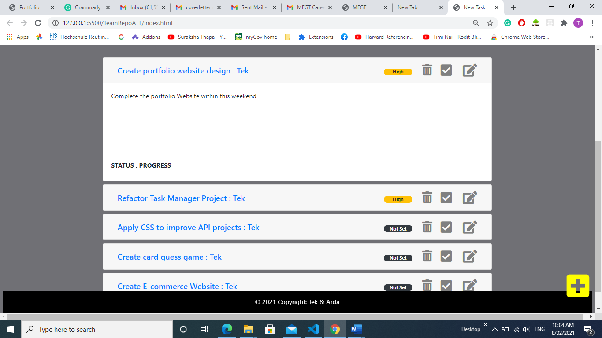
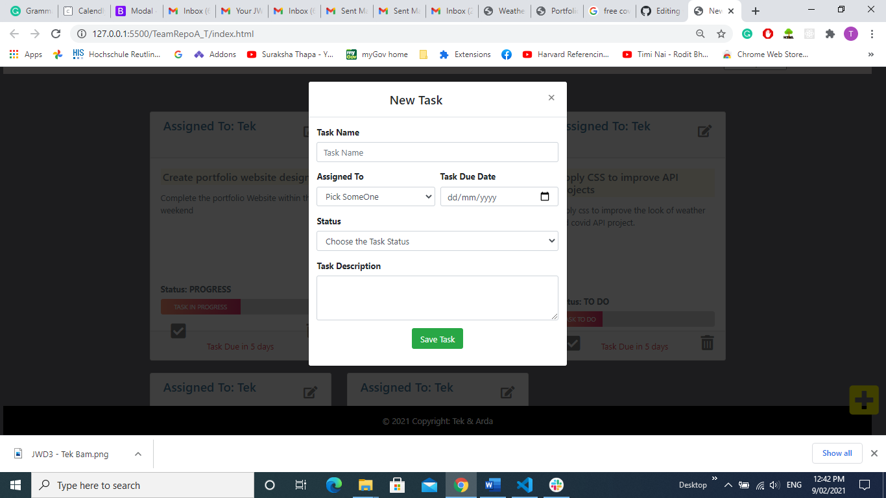
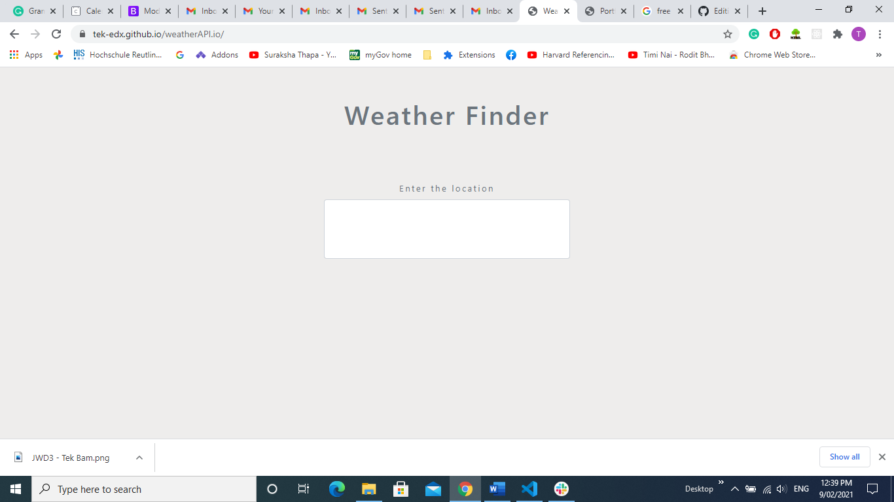
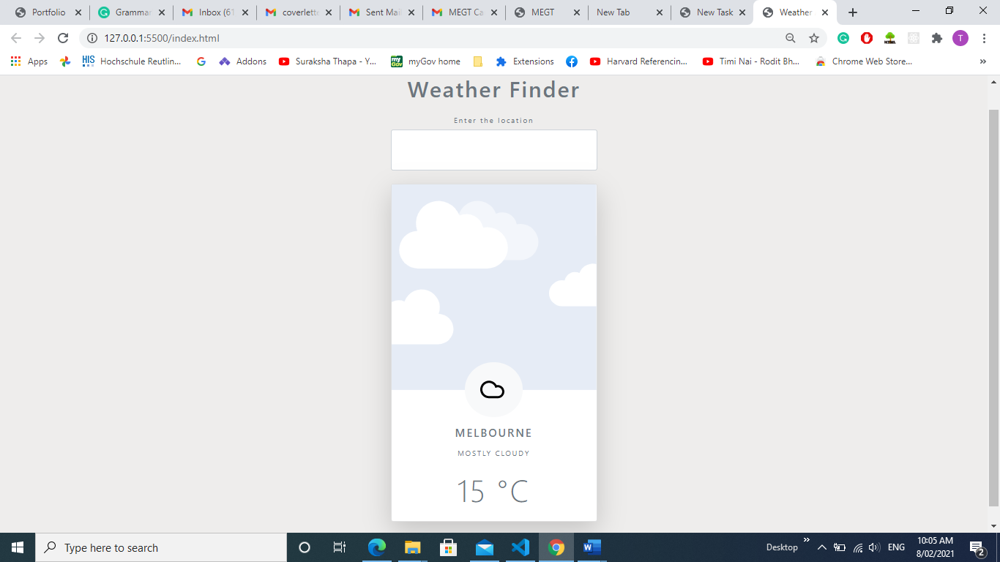
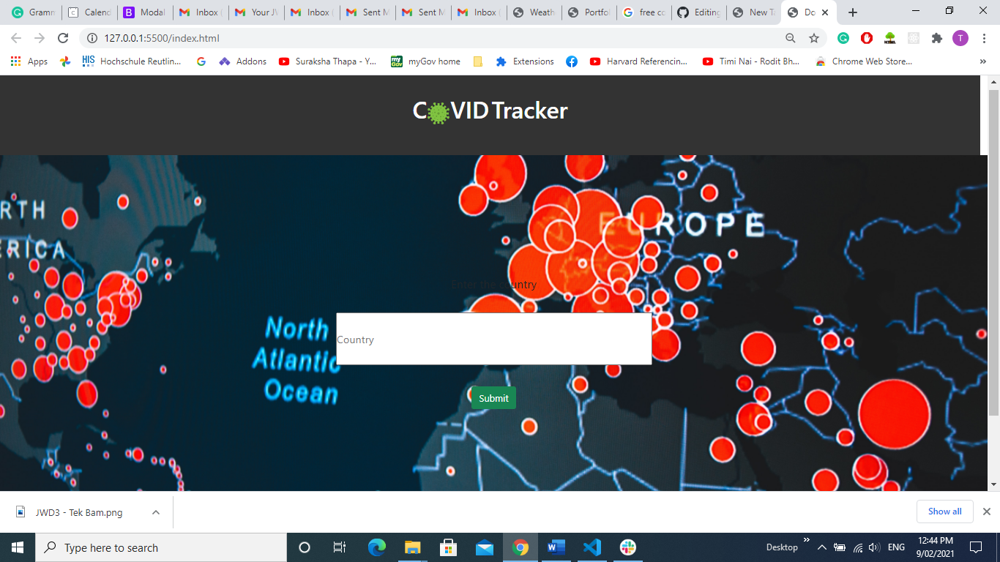
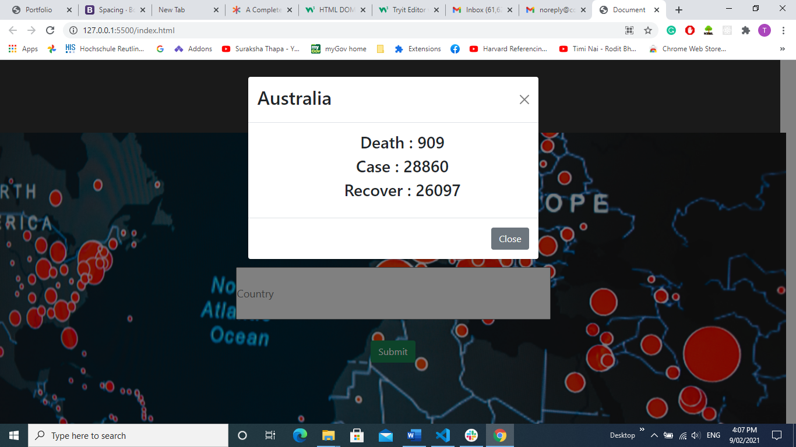
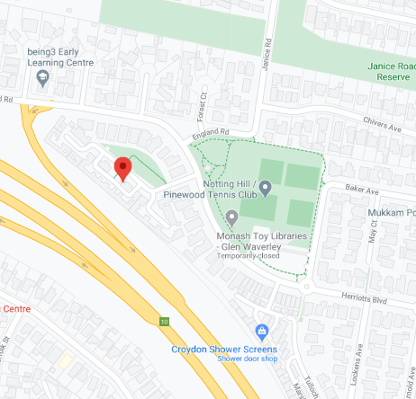

About Me
"Hello!" I am a recent graduate from Generation Australia with JWD (Junior Web Developer - FrontEnd) certificate. I am a curious and enthusiastic programming language learner looking for a long term career in an IT industry to convert my passion to a career. Currently busy with studying web-development tools and creating few projects. I am looking for an opportunity to be a valuable member of an organisation while developing my skill and experience.
Skill
Generation Australia
Junior Web Development Certification
The extensive 12 weeks full-time Bootcamp course to learn the various technical and behavioural skills essential to the web development environment. The program focused on building a good grasp on staple tools for web development, for instance, HTML, CSS and JavaScript, as well as behavioural mindset and technique to succeed in the role. Program end with completing the Task Manager ,a web application, as a final project by using Agile methodology.
Besides, I worked with GitHub, popular version control, to work in a team and deploy the webpage. Also, I have acknowledged the usual working procedure of organisation in a real-world scenario by learning about managing tickets and the Scrum process.
Behavioural mindsets, like effective communication, team-work,growth-mindset, persistence are focus learning throughout the program.
Monash University
MIT
The first semester of the MIT degree in Monash, for the year 2020. I have completed three units, Introduction on Java, Networking and Database, for six months. I have completed rigorous theoratical and practical knowledge of Java and completed two projects as my assignment during the program.
Similarly, for Database, I have learned a different aspect of the database creation process and query data from the table. The program ends with a basic understanding of other NoSQL database.
In networking, I gain a basic understanding of the different layer of the network. How each layer works together to communicate with each other. During the student tenure, I solved the networking problem with IP address and routing table using Core Network Emulator
Projects


Task Manager
This is the final project for the Generation Australia. The project is build to create the new task and save to the browser local storage. The project initially build as a desktop app, but added some responsive feature to accomodate some screen size changes.The main purpose of the app to provide user to add, set priority, update and delete the data. For convinence , tasks can be viewd as grid or list and can be searched specific task from search bar
Task Manager Git Repo


Weather Finder
This is a small project to find the weather and temperature of the city using AccuWeather API. The app displays the climate and temperature of the city on the basis of user input. It shows the error message if the city does not found.
Weather Finder Git Repo


Covid Tracker
The covid tracker is simple covid status finder web app, using covid-19 API. The program display fetches result using a bootstrap model and displays an error if there is a problem while fetch or problem with data not found.
Covid Tracker Git RepoCard Guess
The project is one of the javascript version of the assignment I have completed as my Java assignment during my Monash's student tenure. The game allows the user to guess the card and display the message based on comparison with a randomly generated card. It also provides the information, whether the random card is below or above the chosen card if the guess is wrong.
Card GuessE-COM
The project is still in a contemplating stage. The project will start from mid of this 2021 Feburary and estimated competion date is 2020 End of March.
E-COMContact Me

2/16 McKelvie Ct
Glen Waverly
VIC,Australia
0414638177